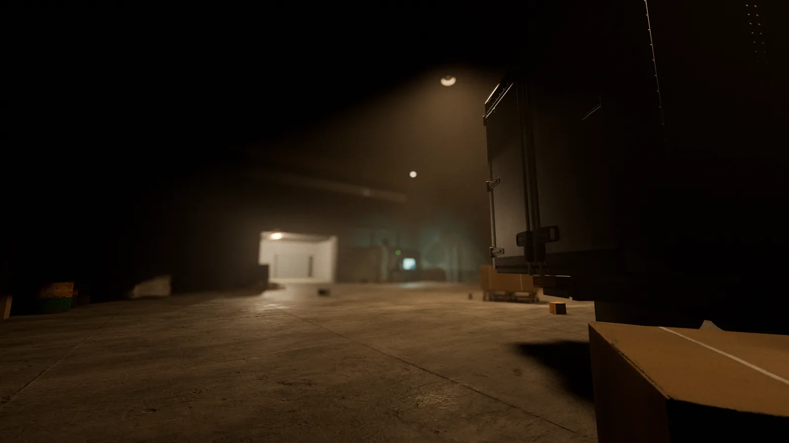

ОБ ИГРЕ
интерференция — наложение волн. когда сигналов слишком много, из шума проступает картина. interference — об том, что проступает.
одиночный шутер от первого лица. тёмные промзоны, штормовые крыши и снег; кинематографичный свет, процедурное насилие и город, где каждый выстрел оставляет след — в стене, в теле, в памяти уровня.
каждый враг собран из костей по-настоящему: попадания считаются по зонам, кровь летит по баллистике и въедается в поверхности, тела падают активными рагдоллами и рассекаются по скелету. никаких заранее заготовленных «смертей» — только физика и геометрия.
игра содержит сцены насилия, жестокости и крови, мерцающие изображения и повторяющиеся визуальные паттерны. 18+.
- ЖАНР
- одиночный FPS
- ДВИЖОК
- godot 4.7 · forward+
- ПЛАТФОРМЫ
- linux · android
- СТАТУС
- вертикальный срез · пролог в работе
- ЯЗЫК
- русский
- ВОЗРАСТ
- 18+

ДОРОЖНАЯ КАРТА
МЕДИА
ПОДДЕРЖАТЬ
interference делает один человек — код, арт, звук и этот сайт. донаты не сжимают время, но покупают его: ассеты, инструменты и возможность чаще заниматься игрой.
подписка или разовый перевод · самые полезные деньги
даже репост глазами разработчика — тоже поддержка.
КОНТАКТЫ
для прессы: превью-сборки и материалы — по почте, тема «press · interference».